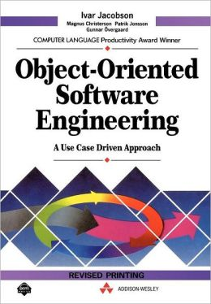

Object-Oriented Software Engineering : A Use Case Driven Approach

by Ivar Jacobsen (1992, 4th revision)
You might wonder if there's anything left to say about object-orientation that hasn't already been discussed to death. I was led to this 1992 book by Uncle Bob's talk "Architecture: The Lost Years." In it Bob posits that in the 1990s, just as people like Ivar were completing their 20-year journey of figuring out some fairly optimal ways to do object-orientation, along came the disruptive influence of the web, which turned everyone's priorities, methodologies and designs upside down. In the resulting stampede, some highly practical ideas have been lost, both in terms of design and process. This has substantially watered down OO's ability to deliver on its promises of reuse and maintainability. It has stranded a whole generation of applications with distorted architectures, inside-out designs, and less maintainable code.
Aspects of these historical approaches do survive, such as the prominence Agile gives to use-cases as a way to concretely tie together requirements, design, testing, and acceptance. But some equally powerful ideas, such as appropriate ways to manage dependencies within an application, have seen relatively little use, and are only now being rediscovered in guises such as the clean and hexagonal architectures.
Ivar's book can certainly lay claim to being one of the earliest published sources to lay out these ideas, and he does so with a style that is convincingly thoughtful. This is the work of an intelligent man, honed and refined over many years of practice. The omission of modern testing techniques are the only thing that substantially dates the content. Otherwise I found it exciting, insightful and revolutionary. It seems naive to claim that this book describes the One True Architecture which is applicable to all systems. But it certainly seems very widely applicable, and has deeply affected my thinking on all projects larger than a couple of weeks' work.
The book also discusses software development methodology in an intriguingly meta way, constructing an object-oriented model of the process itself. Each software development team or organisation represents a particular implementation of this model. Parallels with the execution of software are drawn, with the output of one part of the process, e.g. design work, having to produce results that conform to the expectations of the downstream process, such as implementation. In this way, sections of the process can be removed and replaced by compatible alternatives, to better suit the application domain and the organisation within which the project is embedded. These ideas seem less immediately applicable and actionable. Maybe that's just my personal circumstance. Perhaps they are more applicable to larger projects, which I avoid these days.
Rating:
10/10 if you're going to enjoy 500 pages of software design principles and case studies.
0/10 if you're not.